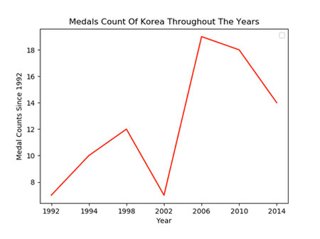

MEDALS COUNT OF KOREA THROUGHOUT THE YEARS
This is about total medals count of Korea throughout the years from 1992 to 2014.
The graph shows natural increase of the medals. In 2002, there was a decrease.
In the following years the total medal went up to 19 in 2006.
In 2006, there was an enourmous increase.
From that time on the medal counts was gradually decreased.
Even though the medal counts was decreased,
the graph shows the sharp improvement of medal counts of Korea.
This graph shows count in each medals throughout the years.
Overall, Korea won more gold medals than sliver and bronze.
Also, gold medals increased dramatically in 2006.
In the following years the total gold medals count went down,
while silver medals count went up. in 2010.
In 2014, gold medals count slightly was increased
MEDALS COUNT OF KOREAN AMONG ASIAN COUNTRY
This is about Asians skating medal wins.
The comperison is among Korea, China and Japan.
Korea relatively won more gold medals.
China relatively more won bronze medals.
We can see Korea has strengths in winter skating.
The graph shows percentages of total medals wins. The chart is divided into 3parts. The largest number of total medals win are in form Korea. There is 46.0%. The second number of total medals win are in from China. There is 39.2%. last, the thrid number of total medals win are in from Japan. There is 14.8%. The charts shows the total medal wins are similar with Korea and China.
MEDALS COUNT BETWEEN KOREAN MEN AND WOMEN
The chars shows Korea skating medal wins between
woman and man since 1922.
The women number of medal wins is 51.7%,
and The men number of medal wins is 48.3%.
There were small different persentages between women and men
The stacked bars are about Korea skating medal wins
between women and men.
The largest number of total gold medals are from women.
The second largest number of total silver medals are
from men.
The chart shows us women are stronger than men in winter skating.